徹愛都已經開學上課兩週多了 媽媽我卻一直還沒幫愛愛的小一生活做個了結 講真的 不若哥哥那樣帶給我們高濃度刺激 不論好的還是壞的事 中規中矩的愛愛的確容易讓人不小心就可能忽略了她的真實感受與似平淡的好與惡 我與徹爸常提醒著彼此不可如此 但媽媽寫比較少的愛愛卻是不爭的事實阿… 所幸徹與愛都認為媽媽最愛的是他(她)自己 讓我可以理直氣壯說”因為媽媽有因才施愛阿” 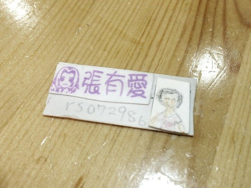
愛愛寫的少 除了因為她本身自主性與實踐力都不太令人擔心外 有一個重要關鍵是 對於愛愛的老師 我實在難有太多互動與期待 我總只是跟愛愛說”功課盡自己能力的寫 事情盡自己能力的做就好 媽媽希望你是個在校跟在家都如一的小天使” 因為我不希望她為了達到老師的標準 為了維持在班上好學生的形象而耗費太多不必要的心力 (如果說阿徹是需要我們替他多噴火 那愛愛就需要我們提水來澆火) 而愛愛雖然嘴上總說著明白 不會勉強自己 但我們知道她很喜歡這樣受同學與老師信賴(握權)的感覺 也因此我們反而會特別的噹她不可以得意忘形 失了小女生該有的溫文 愛愛下學期成績單如預期的一片優 除了國語以外 而老師對於她的評語是: “活潑有禮 性情隨和 與同學之間的相處都很融洽 學習態度佳 各種學習也都能舉一反三 更能舉手表達出自己的意見 但有時候做事情會分心或粗心大意 如能改進 將會有更棒表現 加油 寫作業錯誤時 一定要先擦乾淨 然後再寫上正確的字喔 “ 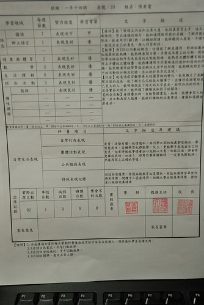 我跟徹爸常笑愛愛”妳們老師對你最不滿意的地方應該就是那個字不夠漂亮” 愛愛總是有點無奈的哈哈大笑~~ 愛愛語文本能獲得最好的等第是甲下 跟哥哥的作業本相較之下 我們只能說哥哥的老師真是佛心來著 而愛愛也認命的嚷著 我三年級以後也要讓書羽老師(哥哥老師)教啦 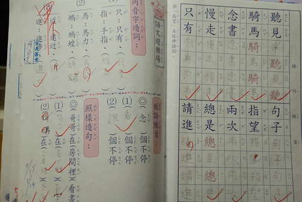 數學作業最常被扣分的則是那個寫的不夠標準的0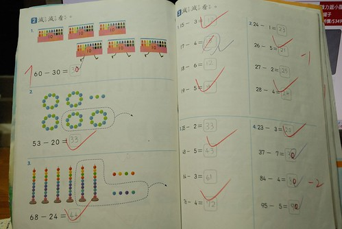 但除了國數 任何科目與活動學習單 愛愛都好愛寫也常寫的好豐富 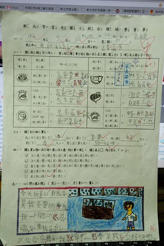 學期末前的全校家庭相簿活動 愛愛寫了生平的第一篇短文 相較於全班同學的一兩句話 我都有點擔心老師會不會懷疑是我們逐字授意的 但字字句句真的都是愛愛自己構思與完成 我說”聽了媽媽指導哥哥寫作文兩年 果然愛愛也好厲害” 愛愛大笑說對阿! 可是一旁哥哥大呼”哪有這樣的~” 很不能釋懷被妹妹偷學去了 畢竟是用他的汗淚換來的 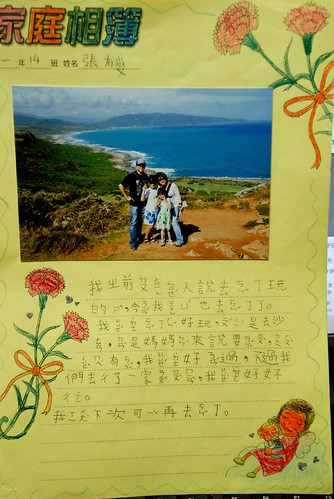 我跟徹爸兩人私下偶會嘀咕 愛愛大概有那麼一天會因為成績不夠優秀而失寵的 果然 學期中後出現勁敵 而且還是本來最好的朋友 更慘的是好朋友還換掉了她這個好朋友 愛愛的心都快碎了 所幸經過一個暑假 愛愛釋懷許多 只是每當說起還是有那麼點不勝唏噓
愛愛的頭髮從剛上小一前的剪短髮 很快的到隔年夏天就又長到可以綁兩支 披肩長髮戴上剪頭髮阿姨送的髮圈真的怪有氣質的 只是厚~~~ 小女子很不愛綁頭髮 就算綁了也常到學校後就拆開 而就算沒拆 回家後也常是披頭散髮 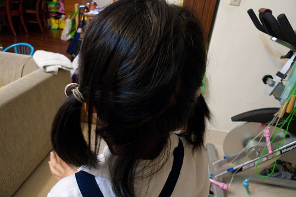 看著我的短髮清爽樣 難忍夏天長髮的阿雜樣 愛愛又很果決的決定要剪短頭髮 要像媽媽那樣短 而且一旦決定就再也不更改 不知怎麼的 不若以前短髮的猴樣 這回竟覺得短髮的愛愛反到多了股成熟的味道~ 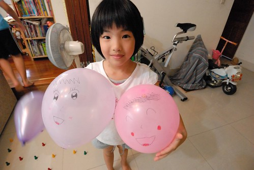 而調皮的時候也更顯靈活靈現 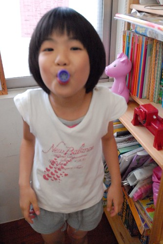
愛愛跟哥哥的睡覺交易依然持續進行中 而且衍生的代幣與交易方式還越來越搞笑 擺明就是妹妹吃定哥哥 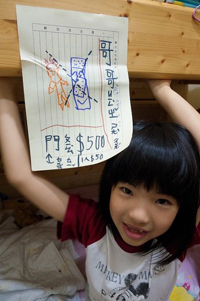 不過因為哥哥真的太依賴妹妹 太需要妹妹的保護 尤其在看了有的沒有的書那天 所以哥哥幾乎言聽計從的任妹妹宰割 還高興的很 而我們就也睜一隻眼閉一隻眼 隨兄妹去了 只是總提醒哥哥小心依賴成性 哪天妹妹突然翻臉 他就慘了 而這樣女絕情 男傷心的戲碼 當然也常在家裡發生嚕… 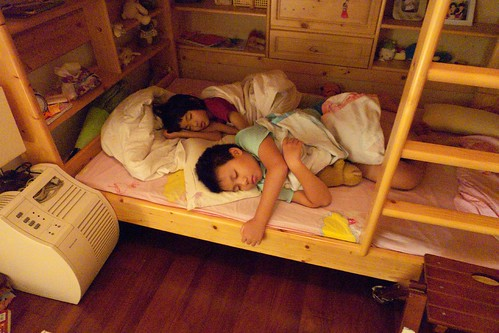
受哥哥的影響 愛愛對忍者也略有所知 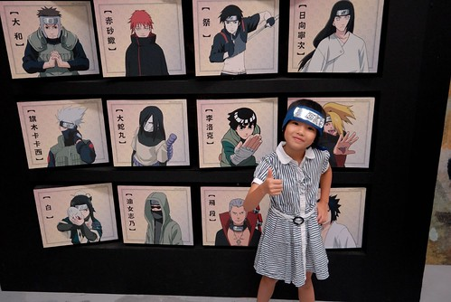 某一天竟自己做了個忍者標籤貼在身上 開心的在家裡跑來跑去大喊”喝~ 我是女忍者 看招~ 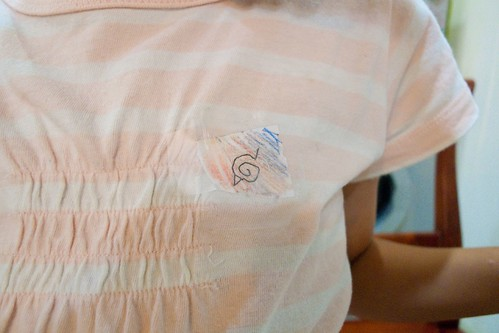 哥哥花了好些時間幫她做兵器後 女忍者更是開心了 哥哥許多諸如此類的對妹妹好 讓妹妹更是喜歡哥哥 樂於跟哥哥睡覺 然後哥哥就也更樂於跟妹妹玩 教她玩許多有的沒的遊戲 (哥哥玩的創意真的太強 這點換妹妹很依賴他) 兄妹倆間的感情也就在這樣好的循環下越來越甜蜜與堅固 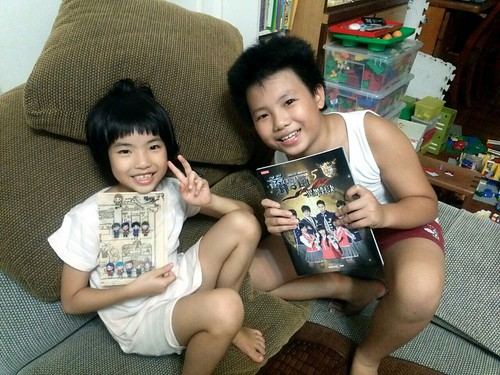 零零散散寫下小部份對愛愛的觀察與紀錄 到最後… 有沒有發現缺牙缺很久的愛愛總算長齊她的門牙 四顆大門牙 愛愛真的又長大了! 倒數的二年級 請繼續努力做自己!!!